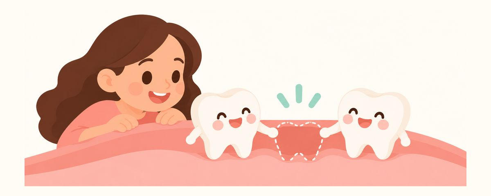

유치 어금니를 일찍 잃었다면: 공간유지장치로 영구치 자리 지키기
유치 어금니를 충치로 일찍 빼면 옆 이가 기울어 영구치 자리가 좁아질 수 있어요. 공간유지장치가 필요한 경우와 끼고 지내는 요령, 치과에 가야 할 때를 정리했어요.
한눈에 보기
- 유치 어금니는 9~12세까지 영구치 자리를 지켜요
- 일찍 뺐다면 공간유지장치가 필요한지 물어봐요
- 장치를 꼈다면 끈적한 사탕·얼음 깨물기는 피해요
"어차피 빠질 유치인데 그냥 빼면 안 되나요?" 하는 질문을 자주 받아요. 그런데 유치 어금니는 단순히 씹는 이가 아니라 영구치가 나올 자리를 맡아 두는 역할도 해요. 유치 어금니를 일찍 잃었을 때 왜 공간을 지켜야 하는지, 무엇을 물어보면 되는지 정리했어요.
유치 어금니는 자리 지킴이예요
유치 어금니는 9~12세 무렵 그 아래에서 자란 영구치(소구치)로 바뀔 때까지 입안에서 자리를 지켜요. 영구치는 유치 어금니 바로 밑에서 자라다가 때가 되면 그 자리로 올라와요.
그런데 충치 때문에 유치 어금니를 일찍 빼거나 일찍 빠지면 문제가 생길 수 있어요. 이는 빈자리가 생기면 그쪽으로 조금씩 기울거나 움직이는 성질이 있거든요. 양옆의 이가 빈자리로 기울면 그만큼 공간이 좁아지고, 나중에 영구치가 올라올 때 자리가 모자라요. 그러면 영구치가 엉뚱한 방향으로 나오거나 제때 나오지 못할 수 있어요.
이걸 막아 주는 게 공간유지장치예요. 빈자리 양옆의 이가 기울지 않도록 그 공간을 붙잡아 두는 작은 장치예요. 친구가 올 때까지 옆자리에 가방을 올려 자리를 맡아 두는 것과 비슷해요. 하지만 이를 일찍 뺐다고 모두 장치가 필요한 건 아니에요. 어느 이가 빠졌는지, 아이 나이가 몇인지, 아래 영구치가 얼마나 자랐는지에 따라 달라요. 그래서 치과의사가 방사선 사진으로 영구치의 상태를 확인하고 판단해요.
스스로 흔들려 빠진 유치는 영구치가 곧 올라올 때가 되었다는 뜻이라 보통 장치가 필요 없어요.
빼기보다 치료가 먼저예요
가장 좋은 공간 지키기는 유치 어금니를 끝까지 쓰는 거예요. 유치 어금니에 충치가 생겼다면 빼기보다 치료해서 지키는 게 먼저예요. "곧 빠질 이"라고 치료를 미루면 충치가 깊어져 결국 일찍 빼야 할 수 있어요.
이미 일찍 뺐다면 이렇게 해 주세요.
- 이를 뺀 그 자리에서 공간유지장치가 필요한지 치과의사에게 물어봐요.
- 필요하다고 하면 너무 늦지 않게 장치를 해요. 기다리는 동안 옆 이가 움직일 수 있어요.
- 장치를 낀 뒤에도 정기검진을 거르지 않아요. 검진 때 영구치가 얼마나 올라오는지 확인해요.
장치를 끼고 지낼 때 요령이에요.
- 장치 둘레에 음식이 잘 끼니 그 부위를 더 꼼꼼히 닦아요.
- 끈적한 사탕·캐러멜, 얼음 깨물기는 피해요. 장치가 빠지거나 휠 수 있어요.
- 아이가 혀나 손가락으로 장치를 자꾸 건드리지 않게 이야기해 줘요.
- 양치를 봐 줄 때 부모가 입안을 들여다보며 장치가 제자리에 잘 붙어 있는지 봐요.
장치가 있는 쪽은 칫솔을 작게 움직이며 장치와 이 사이, 장치와 잇몸 사이를 차례로 닦아 주세요. 아이가 혼자 닦는 나이라도 장치 둘레는 놓치기 쉬우니 가끔 마무리로 확인해 주면 좋아요.
공간유지장치는 영구치가 나오면 제거해요. 언제 뺄지는 정기검진 때 영구치 진행을 보고 정하니 검진을 꼭 이어 가세요.
자주 묻는 질문
어차피 빠질 유치 어금니, 꼭 치료해야 하나요?
유치 어금니는 9~12세까지 씹기와 영구치 자리를 함께 맡아요. 충치를 두면 아프거나 일찍 빼야 할 수 있어서 치료해서 지키는 게 먼저예요. 치료 방법은 충치 상태에 따라 다르니 치과와 상의하세요.
이를 뺐는데 공간유지장치 이야기를 못 들었어요.
다음 진료 때나 바로 전화로 장치가 필요한지 물어보세요. 빠진 위치와 나이, 영구치 발육에 따라 필요 없는 경우도 있으니 치과의 판단을 들어 보는 게 좋아요.
장치는 얼마나 오래 끼나요?
아래에서 영구치가 올라올 때까지 껴요. 아이마다 시기가 달라서 정기검진 때 영구치가 나오는 걸 확인하고 제거해요.
장치를 끼면 아프거나 불편하지 않나요?
처음 며칠은 혀에 걸리거나 어색할 수 있지만 대개 금방 익숙해져요. 잇몸을 찌르거나 아픔이 계속되면 치과에 알려 주세요.
이럴 땐 치과에 가 보세요
- 공간유지장치가 흔들리거나 빠졌을 때(바로 가요)
- 유치 어금니에 충치가 보이거나 아이가 그쪽으로 씹기를 피할 때
- 유치가 빠진 뒤 영구치가 오래 보이지 않을 때
- 빈자리 옆의 이가 기울어 보일 때
- 장치 둘레 잇몸이 붓거나 아파할 때
시기마다 알림으로 받아 보세요
치아달력 앱에 생일(또는 출산 예정일)을 넣으면 이 글들이 필요한 때에 맞춰 알림으로 와요. 가입 없이 무료로 쓸 수 있어요.
출처
이 앱의 정보는 일반적인 교육 목적이며 진료를 대체하지 않습니다. 아이의 상태에 대해서는 치과의사와 상담하세요.